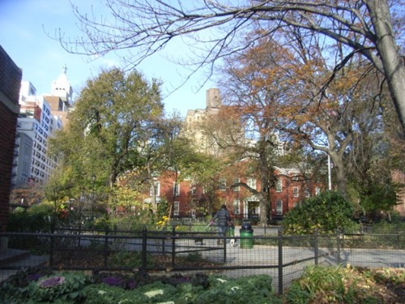

“Wild” nature, which can be defined as all those elements (vegetable and animal) that pre-dated and have not been transformed by humankind, was a hostile space that had to be tamed. It never “appeared as beautiful as when the machine made its intrusion into the landscape” (Baridon 1998). In the collective human imagination, nature therefore symbolises freedom and beauty. At this moment in humankind’s history, it stands in stark opposition not only to industrialisation and urbanisation (Stallybrass and White 1986) but also to the city itself, which appears more than ever as the imprint of humanity’s power and its capacity to transform its environment. The idea of nature that began to develop at the time was defined not so much in its own terms as in opposition to the city, built by humans as the ultimate place of exchanges: exchanges of goods, of services, of knowledge, of ideas, of tastes, of emotions, and of mores and manners (Elias 1991); but also a place of congestion, of pollution, and of social tensions. It would become an essential factor in the well-being of city-dwellers.

A park in the heart of Manhattan, New York City (November 2007)